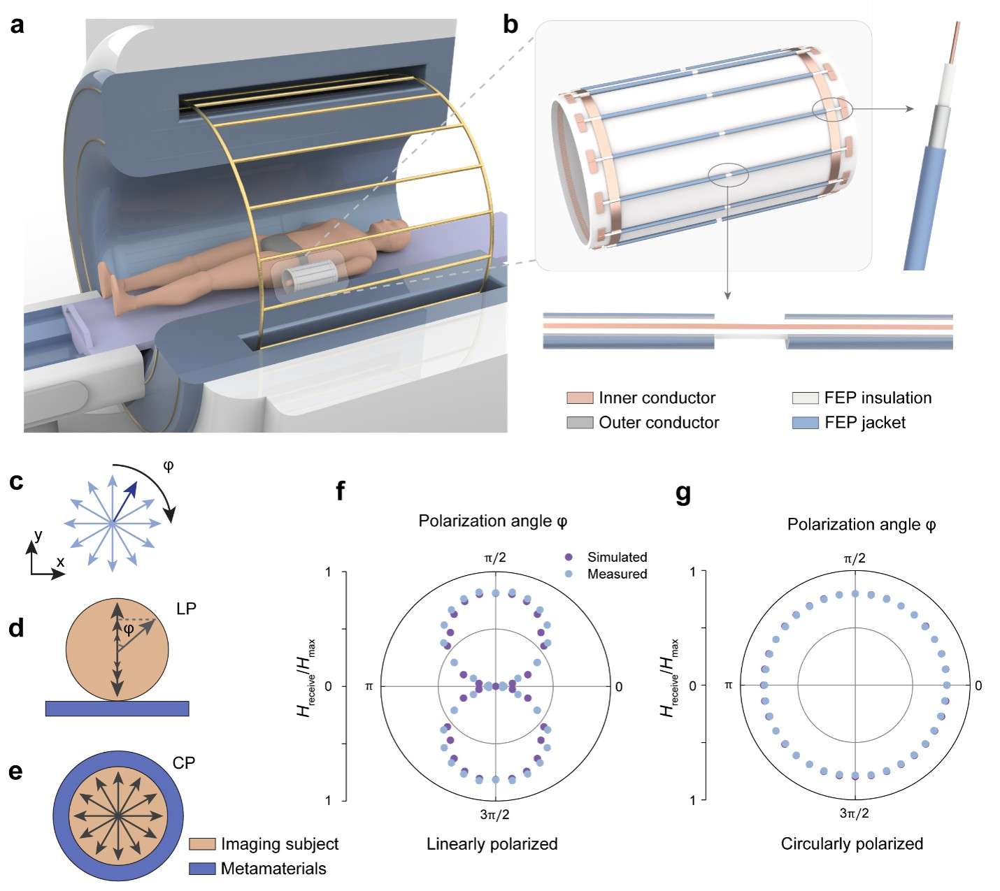

FEATURED MRI PROJECT
Wireless Metamaterial Interfaces for Wrist MRI
Developed a circularly polarized wireless RF metamaterial resonator for homogeneous MRI signal enhancement, combining electromagnetic design, RF prototyping, characterization, and imaging validation.
First-author paper in Advanced Materials